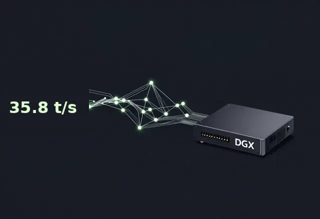

Flagship
miaai35-tune
My clean-restart baseline is 35.80 tok/s coding decode: Qwen3.6-35B-A3B on llama.cpp, one DGX Spark, thinking off, speculative decode off, 9 July 2026, coding quality 9/10. I take it from the results file, and the number sits in the committed JSON I can re-run any day.